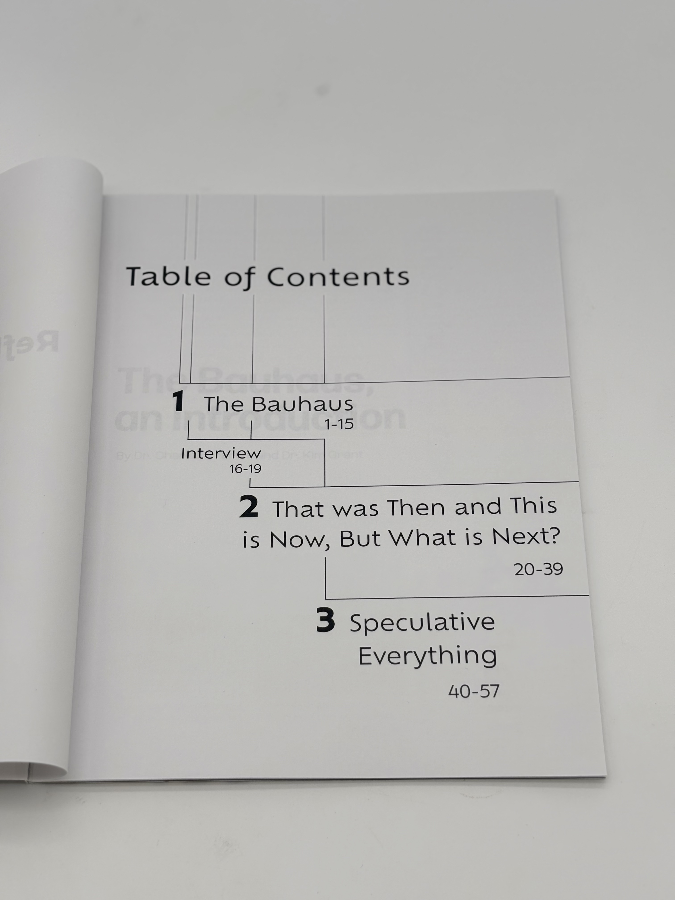
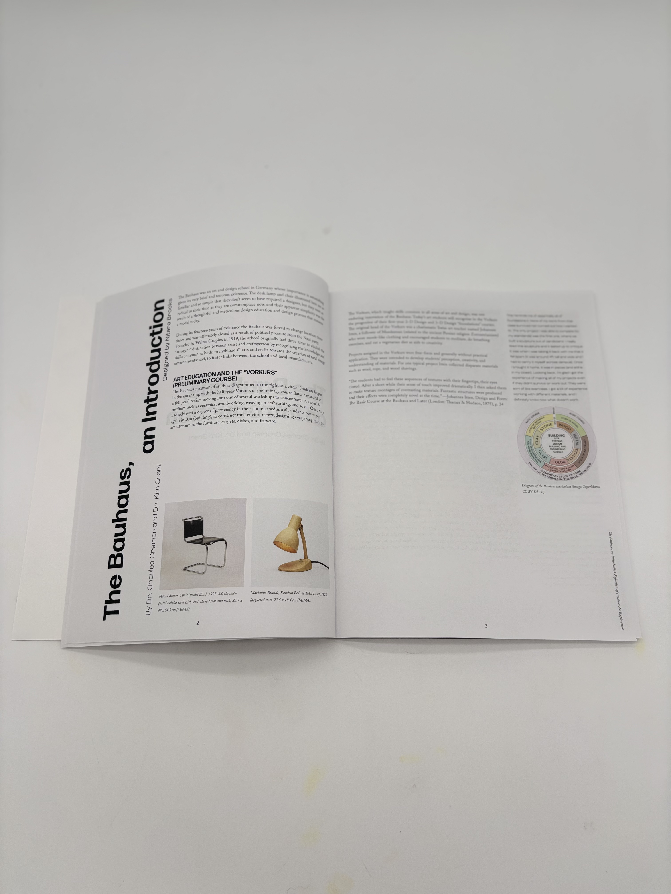
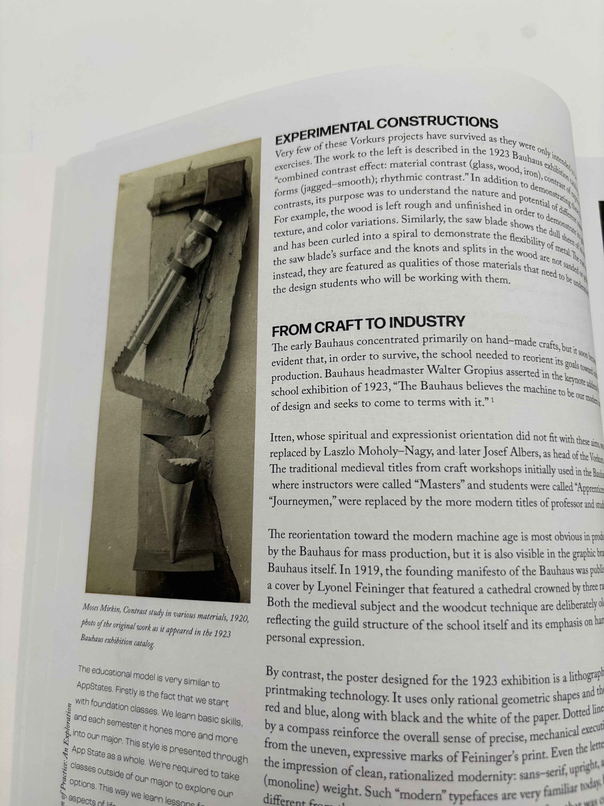
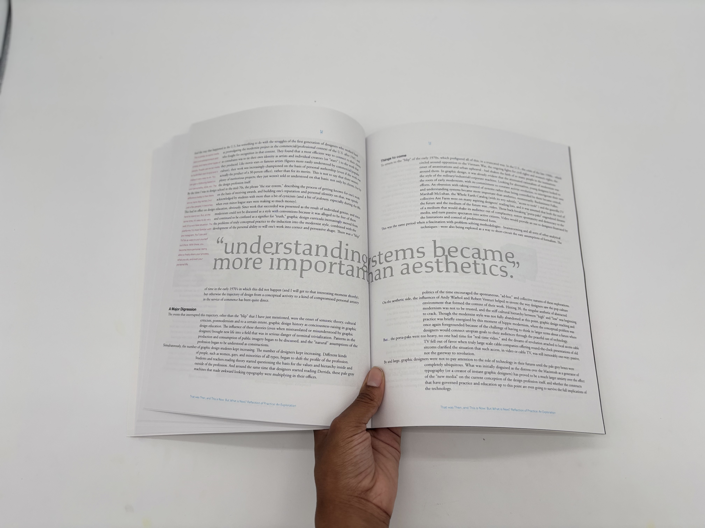
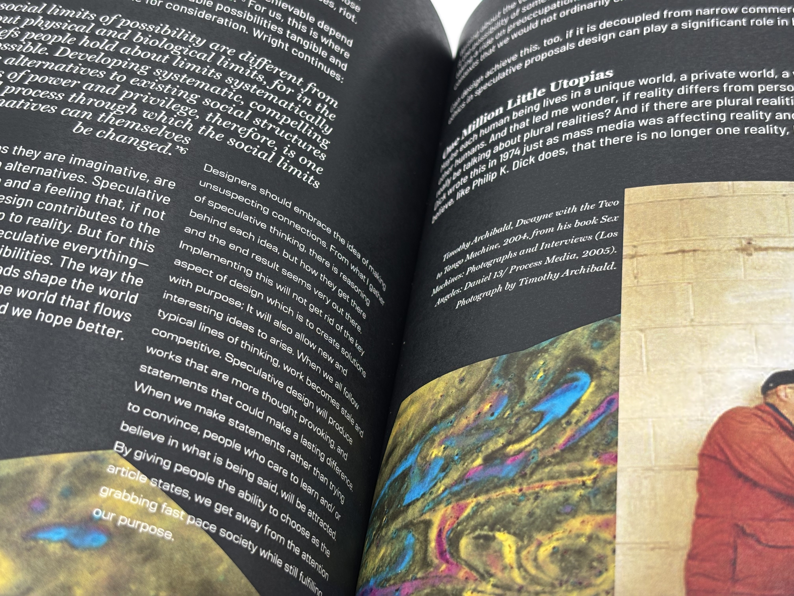

This book takes the viewer through different points in
design history via design and content. Based on each
segment of text and the ideas surrounding it, I designed
spreads to encapsulate and portray the concept to
the reader.

A challenging aspect of creating this book was designing the Bauhaus section. I wanted to add many elements to make it lively, but it wouldn't fit Bauhaus's ties to minimal decoration and functionality. I had to find a way to make my design look intentional (opposed to slapping elements plainly on the page) without overdoing it.




Here, I had my first experience using the perfect binding machine.